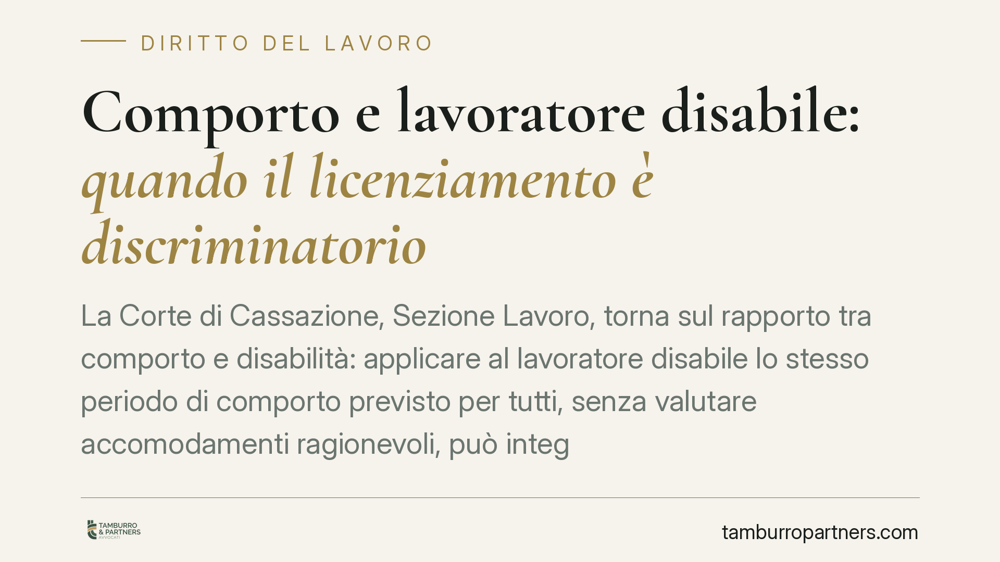

Comporto e lavoratore disabile: quando il licenziamento è discriminatorio
La Corte di Cassazione, Sezione Lavoro, torna sul rapporto tra comporto e disabilità: applicare al lavoratore disabile lo stesso periodo di comporto previsto per tutti, senza valutare accomodamenti ragionevoli, può integrare discriminazione indiretta. Il licenziamento che ne deriva è a rischio nullità. Un tema che impone ai datori di rivedere le procedure di gestione delle assenze prolungate.

Il caso
Un lavoratore con disabilità viene licenziato per superamento del periodo di comporto, cioè il lasso di tempo massimo di assenza per malattia oltre il quale il datore può recedere dal rapporto senza dover provare una giusta causa. Il contratto collettivo applicato non prevedeva regole differenziate per i lavoratori disabili: le assenze legate alla condizione di disabilità venivano conteggiate come qualunque altra malattia.
Secondo una recente pronuncia della Sezione Lavoro della Cassazione, questo automatismo può risultare discriminatorio. *(Il riferimento esatto della sentenza va verificato prima della pubblicazione: al momento della redazione non risulta consolidato numero e anno).*
Inquadramento normativo
Il principio ruota attorno alla nozione di discriminazione indiretta: si ha quando una disposizione, un criterio o una prassi apparentemente neutri mettono in una posizione di particolare svantaggio le persone con una determinata caratteristica protetta, salvo che siano oggettivamente giustificati e proporzionati.
La cornice è data dall'art. 3, comma 3-bis, del D.Lgs. 216/2003, che recepisce la Direttiva 2000/78/CE in materia di parità di trattamento in materia di occupazione. La norma impone al datore di lavoro di adottare accomodamenti ragionevoli per garantire alle persone con disabilità la piena parità sul lavoro, salvo che ciò comporti un onere sproporzionato.
Un lavoratore disabile è statisticamente più esposto ad assenze legate alla propria condizione. Applicargli lo stesso comporto previsto per la generalità dei dipendenti, senza correttivi, lo colloca in una posizione di svantaggio proprio in ragione della disabilità: da qui il possibile profilo discriminatorio.
Il riferimento europeo è la nota sentenza HK Danmark della Corte di Giustizia UE (cause riunite C-335/11 e C-337/11, cd. caso Ring), che ha chiarito come una malattia di lunga durata riconducibile a disabilità rientri nella tutela antidiscriminatoria e come il datore debba considerare gli accomodamenti ragionevoli prima di procedere.
Implicazioni pratiche
Per il datore di lavoro il messaggio è netto: il superamento del comporto non è più, di per sé, un titolo automatico per licenziare il lavoratore disabile. Occorre una valutazione preventiva.
Se il contratto collettivo non prevede un comporto differenziato o accomodamenti specifici, tocca al datore verificare in concreto se esistessero misure ragionevoli per contenere le assenze o adattare la mansione: ad esempio flessibilità oraria, modifica dei turni, riduzione di carichi, ricollocazione su mansioni compatibili.
La conseguenza sul piano sanzionatorio è rilevante. Il licenziamento che integra una discriminazione è nullo. In caso di nullità per motivo discriminatorio si applica la tutela reintegratoria piena: reintegrazione nel posto e risarcimento del danno. Questo regime opera a prescindere dalla data di assunzione, in forza dell'art. 2, comma 4, del D.Lgs. 23/2015 per i contratti a tutele crescenti e dell'art. 18 dello Statuto dei lavoratori per i rapporti precedenti. In entrambi i casi la discriminazione porta alla sanzione più forte.
L'onere della prova, inoltre, è agevolato per il lavoratore: se questi allega elementi che fanno presumere la discriminazione, spetta al datore dimostrare che il licenziamento è fondato su ragioni estranee e che erano stati valutati gli accomodamenti possibili.
Cosa fare in concreto
- Mappate i lavoratori con disabilità riconosciuta e verificate se le loro assenze sono riconducibili a tale condizione prima di applicare il comporto.
- Non conteggiate meccanicamente le assenze legate alla disabilità: documentate una valutazione caso per caso.
- Istruite per iscritto la ricerca di accomodamenti ragionevoli (orario, mansione, postazione), motivando l'eventuale impossibilità o l'onere sproporzionato.
- Coordinatevi con il medico competente per definire la compatibilità tra condizione del lavoratore e organizzazione aziendale.
- Aggiornate le procedure interne e i modelli di lettera, così che ogni recesso per comporto sia preceduto da una verifica tracciabile.
Consigliamo, prima di ogni licenziamento per superamento del comporto che coinvolga un lavoratore disabile, un vaglio preventivo della posizione: è lo snodo in cui si decide la tenuta del recesso.
Disclaimer
Contributo informativo a cura di Tamburro & Partners – Avv. Giuseppe Tamburro. Non costituisce parere legale.
Ogni storia di lavoro ha i suoi tempi.
Se gestisci HR e vuoi un confronto su contenzioso, ispezioni o licenziamenti, scrivi allo studio. Ti rispondiamo entro un giorno lavorativo.